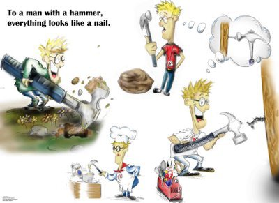
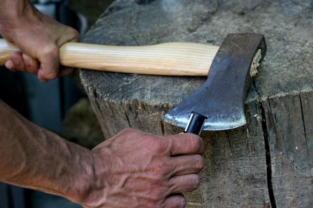
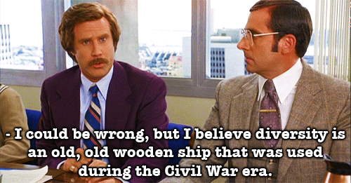
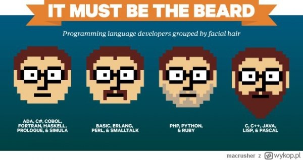
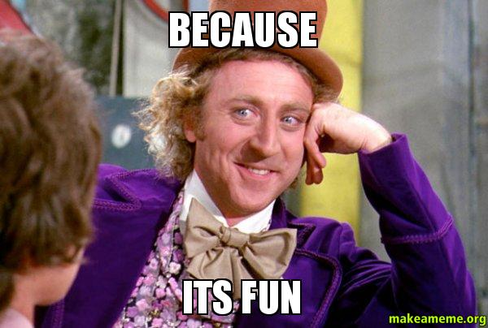
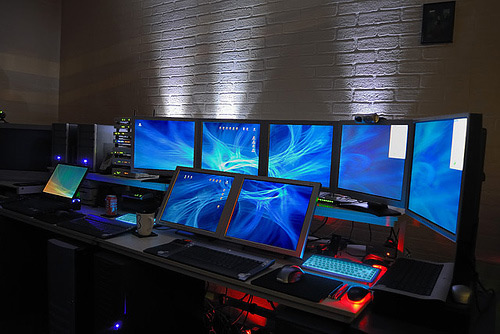
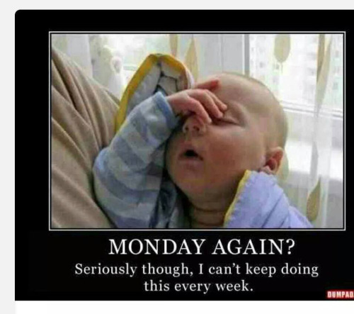
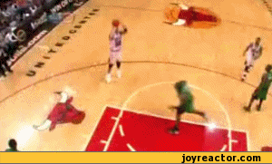
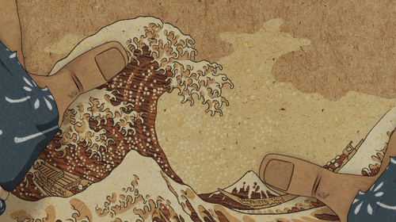
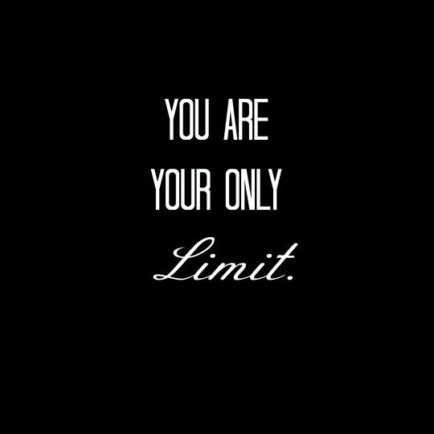

Pamiętaj - nie każdy problem jest gwoździem...
Przed pracą zawsze ostrz narzędzia
Dywersyfikuj swoją wiedzę!
Zmiana pracy? I nie ma problemu :) 
Bo to czysta p r z y j e m n o ś ć! 
Różnorodność rozwija!
Różne języki to różne problemy... Ale i brak zupełny niektórych z nich!
Różne języki to różne... techniki :)
Nienawidzę poniedziałków?
Już nie bo teraz każdy jest inny!
To teraz minusy :(
* no bo same plusy to zuo!Programowanie to gra zespołowa
Może to nie pasować do biznesu
Dużo języków, dużo pomyłek!
* jak odejdziecie ktoś to musi po Was ogarnąć!Mimo tych wszystkich cech jestem za...
Natchniony przez Wunderlist...
...robię każde narzędzie w innym języku!
Przede wszystkim w pracy...
...i poza pracą też!
Namawiam i Ciebie!
Use a spacebar or arrow keys to navigate